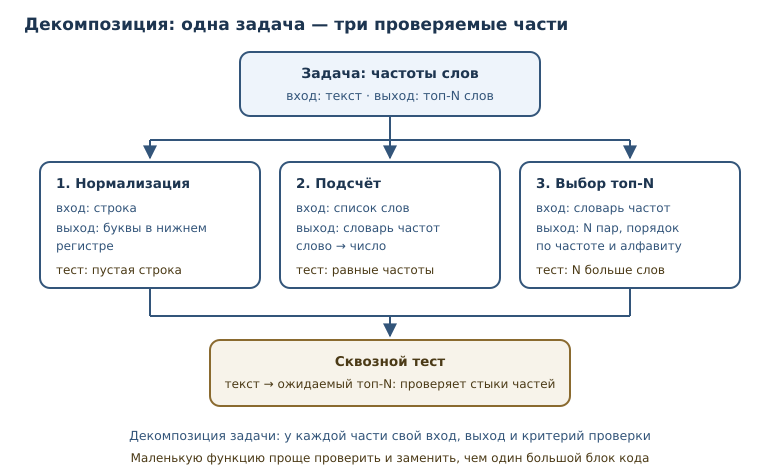
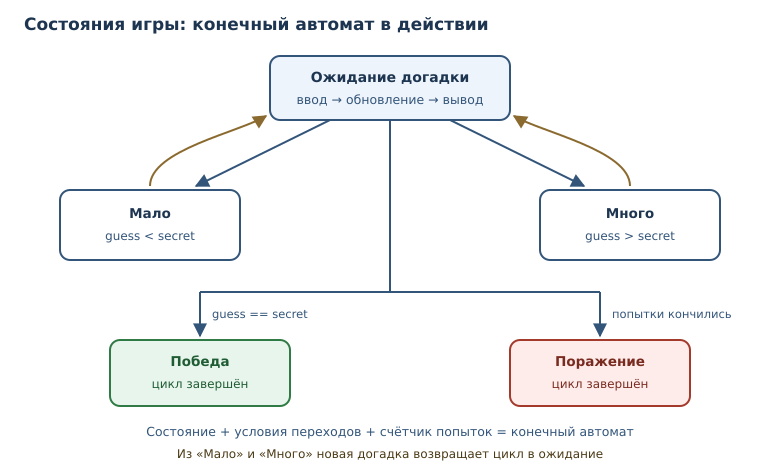

Практикум: классические задачи и разбор решений
Задачи на декомпозицию, состояние, игровой цикл и алгоритмы — с полным разбором решений.
В этой главе
Умение писать код складывается не из знания синтаксиса, а из опыта решения задач. И здесь важно не «увидеть правильный ответ», а научиться получать его самому: понимать условие, находить идею, проверять границы и доказывать, что решение работает.
Эта глава — практикум. В ней семь классических задач, каждая разобрана целиком: постановка своими словами, идея, код, сложность, граничные случаи и вывод о том, что именно она тренирует. Общие приёмы — декомпозиция задачи, проектирование алгоритма, конечный автомат и игровой цикл — вы увидите в действии, а не в виде определений.
54.1 Что вы сможете после этой главы
К концу главы у вас будет рабочий метод решения незнакомых задач и разбор семи типовых сюжетов, на которых этот метод удобно тренировать. Вы сможете:
- разбивать задачу на подзадачи с ясными входами и выходами;
- выбирать между перебором, рекурсией и моделированием состояний;
- оценивать сложность и объяснять, почему решение не «зависнет»;
- находить граничные случаи до запуска кода;
- превращать требования в набор тестов и проверять реализацию.
54.2 Как решать незнакомую задачу
У опытного программиста нет «озарений» — есть последовательность шагов. Пять из них закрывают большинство учебных и рабочих задач.
- Понять вход и выход. Что подаётся на вход: число, строка, список, поток данных? Что требуется вернуть: значение, новую структуру, строки вывода? Что считается ошибкой входа?
- Разобрать примеры. Возьмите два-три примера, включая пустой и граничный. Если условие неоднозначно, примеры вскроют это раньше кода.
- Разбить на подзадачи. Декомпозиция задачи — разбиение задачи на подзадачи с ясными входами, выходами и критериями проверки. Вместо одной большой функции появляется несколько маленьких, каждую из которых можно проверить отдельно.
- Проверить на бумаге. Прогоните идею вручную на маленьком примере. Так вы найдёте ошибку до того, как напишете код, и поймёте, какие переменные понадобятся.
- Написать тест и только потом реализацию. Проектирование алгоритма — построение решения: выбор стратегии (перебор, рекурсия, динамическое программирование), оценка сложности и проверка на примерах. Тест фиксирует договорённость о поведении и не даёт подогнать решение под случайный результат.

Полезно сразу оценить масштаб. Если вход размером n, а внутри двойной цикл
по всем элементам, получится квадратичный рост — при больших n решение
может не уложиться во время. Оценка сложности не требует точной формулы:
достаточно понять, сколько раз в зависимости от n выполняется основной цикл.
Подробнее об этом — в главе 52.
54.3 1. FizzBuzz: порядок условий
Постановка. Для чисел от 1 до n выведите строку: Fizz, если число
делится на 3; Buzz, если делится на 5; FizzBuzz, если делится и на 3,
и на 5; иначе само число.
Идея. Каждое число проверяется независимо, поэтому достаточно одного цикла. Главная тонкость — порядок проверок: условие «делится и на 3, и на 5» должно стоять первым, иначе более общие ветки перехватят его.
def fizzbuzz(limit: int) -> list[str]:
result: list[str] = []
for number in range(1, limit + 1):
if number % 3 == 0 and number % 5 == 0:
result.append("FizzBuzz")
elif number % 3 == 0:
result.append("Fizz")
elif number % 5 == 0:
result.append("Buzz")
else:
result.append(str(number))
return result
print(fizzbuzz(15))
['1', '2', 'Fizz', '4', 'Buzz', 'Fizz', '7', '8', 'Fizz', 'Buzz', '11', 'Fizz', '13', '14', 'FizzBuzz']
Типичные ошибки. Первая — проверить % 3, затем % 5, а FizzBuzz не
предусмотреть вовсе: число 15 получит Fizz. Вторая — написать три отдельных
if без elif: строка может быть добавлена несколько раз. Третья —
возвращать числа как числа, а строки как строки, получая список смешанных
типов. Четвёртая — забыть, что диапазон начинается с 1, а не с 0.
Сложность и границы. Время O(n), память O(n), если собирать список;
при печати по одному память O(1). Границы: n = 0 даёт пустой список,
n < 0 — тоже пустой; стоит ли это ошибкой, решает условие задачи.
Что тренирует. Порядок проверок, остаток от деления, аккуратность с типами и границами диапазона.
54.4 2. Ханойская башня: рекурсия и индукция
Постановка. Есть три стержня (A, B, C) и n дисков разного
размера на первом. Нужно перенести все диски на третий, перемещая по одному
диску за раз и не кладя больший диск на меньший. Требуется перечислить ходы
или хотя бы посчитать их число.
Идея. Рекурсия строится на индукции. Чтобы перенести n дисков с A на
C, нужно: перенести n−1 дисков с A на вспомогательный B, переместить
самый большой диск с A на C, затем перенести n−1 дисков с B на C.
База — n = 0: ничего делать не нужно.
def hanoi_moves(n: int, source: str = "A", target: str = "C", spare: str = "B") -> list[tuple[str, str]]:
if n == 0:
return []
return (
hanoi_moves(n - 1, source, spare, target)
+ [(source, target)]
+ hanoi_moves(n - 1, spare, target, source)
)
moves = hanoi_moves(3)
print(len(moves))
print(moves[:3])
print(len(hanoi_moves(10)))
7
[('A', 'C'), ('A', 'B'), ('C', 'B')]
1023
Вывод числа ходов. Каждый вызов делает два рекурсивных вызова и один ход:
T(n) = 2T(n−1) + 1, T(0) = 0. Решение — T(n) = 2ⁿ − 1: для десяти
дисков 1023 хода, для шестидесяти — больше, чем атомов в наблюдаемой
Вселенной. Это пример экспоненциальной сложности O(2ⁿ), а не «медленного
компьютера».
Границы. n = 0 — пустой список; отрицательное n по смыслу неверно и
должно приводить к ошибке, а не к бесконечной рекурсии. Для больших n
сработает ограничение глубины рекурсии: список ходов тоже не поместится в
память. Рекурсию здесь можно заменить явным стеком, но выигрыша по сложности
не будет.
Что тренирует. Рекурсию, базовый случай, индуктивное рассуждение и понимание того, что экспоненциальный рост — свойство задачи, а не языка.
54.5 3. Палиндром и скобочная последовательность
Постановка. Проверить, читается ли строка одинаково в обе стороны
(палиндром), игнорируя регистр и знаки препинания. Отдельно — проверить,
правильно ли расставлены скобки (), [], {} в выражении.
Идея для палиндрома. Сначала нормализация: оставить только буквы и привести их к нижнему регистру. Затем два указателя сходятся к середине, сравнивая символы.
def normalize(text: str) -> str:
return "".join(ch.lower() for ch in text if ch.isalpha())
def is_palindrome(text: str) -> bool:
clean = normalize(text)
return clean == clean[::-1]
print(is_palindrome("А роза упала на лапу Азора"))
print(is_palindrome("Привет"))
print(is_palindrome(""))
True
False
True
Идея для скобок. Здесь нужен стек: открывающая скобка кладётся сверху, закрывающая должна совпасть с последней открытой. Если в конце стек не пуст или закрывающая пришла к пустому стеку — последовательность неверна.
PAIRS = {")": "(", "]": "[", "}": "{"}
OPENING = "([{"
def is_balanced(text: str) -> bool:
stack: list[str] = []
for char in text:
if char in OPENING:
stack.append(char)
elif char in PAIRS:
if not stack or stack.pop() != PAIRS[char]:
return False
return not stack
for sample in ["([]{})", "(]", "([)]", ""]:
print(repr(sample), is_balanced(sample))
'([]{})' True
'(]' False
'([)]' False
'' True
Типичные ошибки. Для палиндрома — забыть нормализацию или нормализовать
не полностью: тогда "А роза..." не совпадёт сама с собой. Для скобок —
проверять только количество скобок, а не порядок: "([)]" содержит по паре
каждого вида, но неверна. Ещё одна ошибка — не обработать пустой стек перед
pop.
Сложность. Обе задачи линейны: O(n) по времени, O(n) памяти в худшем
случае (стек или нормализованная строка). Сравнение двух указателей можно
сделать без копии строки, если нормализовать «на лету».
Что тренирует. Работу со строками и индексами, идею стека как «последним пришёл — первым вышел», проверку границ.
54.6 4. «Угадай число»: игровой цикл и конечный автомат
Постановка. Программа загадывает число от 1 до 100. Игрок вводит догадки; программа сообщает «больше», «меньше» или «угадал». Игра заканчивается победой или после фиксированного числа попыток.
Идея. Это конечный автомат: у игры есть состояния и правила перехода между ними. Состояния: ожидание догадки, «загаданное больше», «загаданное меньше», победа, поражение. Игровой цикл — цикл, который повторяет чтение ввода, обновление состояния и отрисовку, поддерживая интерактивность.
В учебном примере ввод заменён списком догадок: так результат детерминирован и проверяем.
def play_guess(secret: int, guesses: list[int], max_attempts: int = 5) -> tuple[str, int]:
attempts = 0
for guess in guesses:
attempts += 1
if attempts > max_attempts:
return "поражение", max_attempts
if guess < secret:
state = "больше"
elif guess > secret:
state = "меньше"
else:
return "победа", attempts
print(f"попытка {attempts}: {guess} — загаданное {state}")
return "не завершено", attempts
print(play_guess(42, [50, 25, 37, 42]))
print(play_guess(42, [10, 20, 30, 40, 50, 60]))
попытка 1: 50 — загаданное меньше
попытка 2: 25 — загаданное больше
попытка 3: 37 — загаданное больше
('победа', 4)
попытка 1: 10 — загаданное больше
попытка 2: 20 — загаданное больше
попытка 3: 30 — загаданное больше
попытка 4: 40 — загаданное больше
попытка 5: 50 — загаданное меньше
('поражение', 5)
Почему цикл обязан завершаться. У цикла три выхода: победа, исчерпание попыток, конец входных данных. Если забыть хотя бы один, игра может зависнуть в ожидании. В интерактивной версии добавляется четвёртый выход — команда «выход». Явное перечисление выходов и есть проектирование состояний.
Границы. Пустой список догадок даёт «не завершено»; max_attempts = 0
сразу приводит к поражению. Секрет вне диапазона — ошибка входных данных, её
лучше проверять до цикла.
Что тренирует. while/for с несколькими выходами, счётчик попыток,
моделирование состояний и дисциплину завершения цикла.
54.7 5. Collatz: while, границы и честность
Постановка. Для положительного целого n постройте последовательность:
если n чётно, разделите на 2; если нечётно — умножьте на 3 и прибавьте 1.
Повторяйте, пока не получится 1. Посчитайте число шагов.
Идея. Простой while с двумя ветками. Важно не перепутать порядок: для
нечётного числа 3n + 1 всегда чётно, но это не повод объединять шаги.
def collatz_steps(start: int) -> int:
if start < 1:
raise ValueError("нужно положительное целое")
number = start
steps = 0
while number != 1:
number = number // 2 if number % 2 == 0 else 3 * number + 1
steps += 1
return steps
print([collatz_steps(n) for n in range(1, 11)])
print(max(range(1, 100), key=collatz_steps))
[0, 1, 7, 2, 5, 8, 16, 3, 19, 6]
97
Границы и честность. n = 1 даёт 0 шагов — цикл не выполняется ни разу.
n ≤ 0 — ошибка: для нуля последовательность зациклится на 0, для
отрицательных правило не определено. Отдельно стоит сказать о гипотезе
Коллатца: неизвестно, завершается ли последовательность для всех
положительных чисел. Наш код честно работает для проверенных значений, но
доказательства завершения в общем случае у человечества нет. Это хороший
пример различия между «работает на моих тестах» и «доказано».
Сложность. Число шагов не имеет известной формулы; оценивают эмпирически.
Внутри шага — константное число операций, память O(1).
Что тренирует. while с условием на состоянии, обработку неверного
входа, аккуратность в утверждениях о завершении.
54.8 6. Шифр Цезаря: строки и обратимость
Постановка. Зашифровать текст сдвигом каждой латинской буквы на k
позиций по кругу, не трогая регистр и остальные символы. Расшифровка —
тот же сдвиг в обратную сторону.
Идея. Для буквы берём её код через ord, вычитаем код a или A,
прибавляем сдвиг, берём остаток по модулю 26 и возвращаем букву через chr.
Остаток по модулю и обеспечивает «кольцо» алфавита.
def caesar(text: str, shift: int) -> str:
result: list[str] = []
for char in text:
if "a" <= char <= "z":
code = (ord(char) - ord("a") + shift) % 26
result.append(chr(code + ord("a")))
elif "A" <= char <= "Z":
code = (ord(char) - ord("A") + shift) % 26
result.append(chr(code + ord("A")))
else:
result.append(char)
return "".join(result)
secret = caesar("Python 3.14 — это здорово!", 13)
print(secret)
print(caesar(secret, 13))
Clguba 3.14 — это здорово!
Python 3.14 — это здорово!
Почему это обратимо. Сдвиг на k — перестановка букв; обратная
перестановка — сдвиг на 26 − k. Для ROT13 (k = 13) обратная операция
совпадает с прямой: два применения возвращают исходный текст.
Типичные ошибки. Применить сдвиг к кириллице или цифрам и получить
нечитаемый набор символов; забыть про верхний регистр; использовать % 26
для кода символа целиком, а не для позиции в алфавите. Последняя ошибка
особенно коварна: код заглавной и строчной буквы различается, и «единый»
модуль даёт разные результаты.
Сложность. O(n) по времени и памяти; операция над каждым символом
константна.
Что тренирует. Работу с кодами символов, остаток по модулю, обратимость преобразований и внимание к диапазонам.
54.9 7. От требований к тестам
Постановка. Дан текст. Нужно вернуть N самых частых слов с количеством
вхождений. Требования нужно уточнить: регистр не важен; слова — только буквы;
при равенстве частот порядок алфавитный; пустой текст даёт пустой результат.
Декомпозиция. Задача распадается на три подзадачи с ясными контрактами:
| Подзадача | Вход | Выход |
|---|---|---|
| нормализация | строка | строка в нижнем регистре |
| разбиение | строка | список слов |
| подсчёт и выбор | список слов | список пар (слово, число) |
import re
def words(text: str) -> list[str]:
return re.findall(r"[а-яёa-z]+", text.lower())
def top_words(text: str, limit: int = 3) -> list[tuple[str, int]]:
counts: dict[str, int] = {}
for word in words(text):
counts[word] = counts.get(word, 0) + 1
return sorted(counts.items(), key=lambda item: (-item[1], item[0]))[:limit]
print(top_words("Кот и пёс. Кот спит, а пёс ест. Кот ест."))
assert top_words("") == []
assert top_words("Кот кот КОТ") == [("кот", 3)]
assert top_words("б а б", limit=2) == [("б", 2), ("а", 1)]
print("тесты прошли")
[('кот', 3), ('ест', 2), ('пёс', 2)]
тесты прошли
Сортировка по ключу (-count, word) задаёт сразу два правила: сначала по
убыванию частоты, при равенстве — по алфавиту. Без второго правила порядок
зависел бы от порядка вставки, и тест «прыгал» бы при изменении текста.
Тестовые случаи стоит выбирать по риску: пустая строка, текст из одного
слова, слова в разном регистре, равные частоты, limit больше числа
уникальных слов. Каждый случай проверяет своё требование, а не «всё сразу».
Что тренирует. Превращение размытого требования в контракт, декомпозицию, подбор тестов и аккуратную сортировку по нескольким ключам.

54.10 Типичные ошибки на практикумах
- Начинать с кода. Без понятых входа, выхода и примеров решение почти всегда уходит не туда.
- Игнорировать границы. Пустой ввод, ноль, отрицательные числа и максимальные значения ломают больше решений, чем сложные алгоритмы.
- Проверять условия не в том порядке. FizzBuzz и обработка скобок чувствительны к порядку веток.
- Забыть выход из цикла. Игра или поиск должны завершаться при любом допустимом вводе; перечислите все выходы заранее.
- Подгонять тест под результат. Если тест написан после кода и «подкручен», он закрепляет ошибку.
- Считать сложность по количеству строк. Сложность определяется числом операций в зависимости от размера входа, а не длиной кода.
- Утверждать больше, чем доказано. «Работает на тестах» и «доказано» — разные утверждения; в задачах вроде Collatz это принципиально.
54.11 Упражнения
1. Обобщённый FizzBuzz
Напишите fizzbuzz_custom(limit, divisors) для словаря вида
{3: "Fizz", 5: "Buzz", 7: "Boom"}: число заменяется конкатенацией меток
всех подходящих делителей. Если подходящих нет — само число. Проверьте на
числах до 21 и объясните, как порядок ключей влияет на результат.
2. Подсчёт ходов Ханойской башни
Реализуйте две функции: рекурсивную hanoi_count(n) и проверочную
hanoi_formula(n) = 2**n - 1. Сравните результаты для n от 0 до 12 и
объясните, почему рекурсивная версия работает за то же время, что и формула,
но требует больше памяти.
3. Палиндром без нормализации
Проверьте палиндром двумя указателями, игнорируя небуквенные символы «на
лету», без создания нормализованной копии. Проверьте на строках
"А роза упала на лапу Азора", "Я иду с мечем судия", "Привет".
4. Скобки нескольких видов
Проверьте правильность расстановки скобок (), [], {} и верните позицию
первой ошибки (индекс символа) или -1, если всё верно. Проверьте на
"a(b[c]d)e", "a(b[c)d]e", "((()))".
5. Оптимальная стратегия угадывания
Для секрета от 1 до 100 реализуйте функцию best_guess(secret), которая
играет по стратегии деления пополам и возвращает число попыток. Проверьте на
секретах 1, 50, 100 и объясните, почему стратегия даёт не больше семи попыток.
6. Самая длинная цепочка Коллатца
Найдите число от 1 до 1000 с самой длинной последовательностью Коллатца. При равенстве выбирайте меньшее число. Выведите число и длину цепочки, объясните, почему повторные вычисления для разных чисел — приемлемая цена.
7. Расшифровка Цезаря перебором
Дан шифртекст "Clguba 3.14 — это здорово!". Переберите все 26 сдвигов,
расшифруйте каждым и найдите вариант, содержащий слово "Python". Объясните,
почему перебор всех ключей допустим в этой задаче.
8. Частоты с игнорированием слов
Расширьте top_words так, чтобы можно было передать набор стоп-слов.
Проверьте на тексте «кот и пёс и кот», исключив слово «и»; сравните результат
с версией без стоп-слов.
9. Поиск ошибки в игре
В игре «угадай число» счётчик попыток увеличивается только при неверной догадке, поэтому при угадывании с первой попытки он равен нулю. Найдите ошибку, исправьте её и напишите два теста: на победу с первой попытки и на победу с третьей.
10. Мини-проект: игра «камень — ножницы — бумага»
Смоделируйте игру по заранее заданным ходам двух игроков. Состояния:
раунд, победа игрока 1, победа игрока 2, ничья. Реализуйте
play_rounds(moves) с игровым циклом, счётом и явными правилами переходов.
Проверьте на наборе из пяти раундов и объясните, почему такой дизайн удобно
тестировать.
54.12 Проверка понимания
- Зачем разбивать задачу на подзадачи, если её можно решить одной функцией?
- Как порядок проверок влияет на FizzBuzz и на обработку скобок?
- Почему число ходов Ханойской башни растёт экспоненциально?
- Что такое конечный автомат и какие элементы он включает в игре?
- Почему цикл в игре должен иметь явно перечисленные выходы?
- Чем «работает на тестах» отличается от «доказано» на примере Collatz?
- Зачем в задаче о частотах слов фиксировать порядок при равных частотах?
54.13 Что дальше
Практикум заканчивается, но практика — нет. Дальше — проекты, где те же приёмы применяются к полноценным приложениям: консольному менеджеру задач, HTTP-API и асинхронному сборщику данных. Обратите внимание, как в проекте повторяются знакомые шаги: понять требования, разбить на модули, покрыть тестами, проверить границы. О рекурсии и стеке вызовов говорилось в главе 8, о сложности — в главе 52, о тестах — в главе 32.